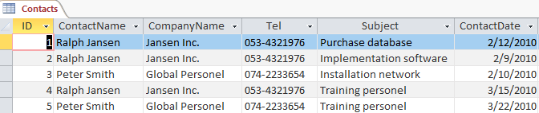
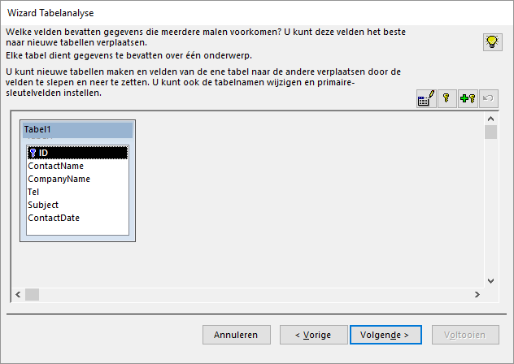
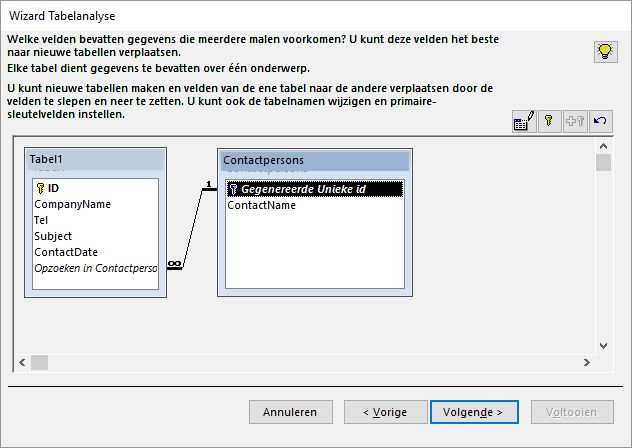
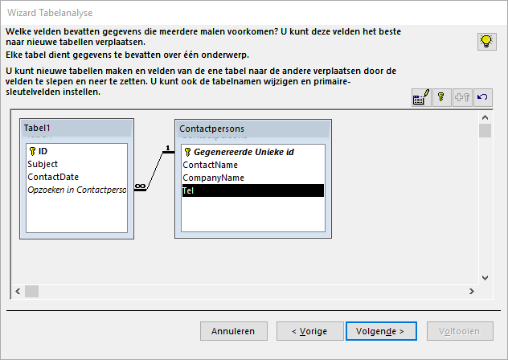

9 Hulpmiddelen
- Tabellen kunnen analyseren en inconsistenties opsporen.
- Het kunnen defragmenteren en repareren van databases.
9.1 Over hulpmiddelen
Access kent een aantal hulpmiddelen om de database te analyseren, problemen op te sporen en te corrigeren. In dit onderwerp komt het volgende aan bod:
- Analyse van een tabel
- Comprimeren van een database
Andere hulpmiddelen binnen Access:
- Analyseren van prestaties
- Documenteren van de database
- Versleutelen met een wachtwoord
- Het maken van een schakelbord
9.2 Taak: Analyse van een tabel
Wanneer dezelfde informatie vaker dan één keer wordt opgeslagen dan wordt dit redundantie genoemd. Dat is onwenselijk, want wanneer de informatie wijzigt, moet deze wijziging op al die plaatsen worden doorgevoerd. Als je dat niet doet dan wordt de database inconsistent.
Access beschikt over het hulpmiddel Tabelanalyse om redundante gegevens op te sporen en een tabel met redundante gegevens op te splitsen in meerdere, gerelateerde tabellen zodat de informatie efficiënter wordt opgeslagen. Dit proces wordt ook wel normalisatie genoemd.
Je kunt opgeven welke tabellen je de wizard wilt laten maken of je kunt jouw tabel door de wizard laten normaliseren. Nadat je de voorgestelde nieuwe tabellen hebt opgegeven, helpt de wizard de gegevens te saneren die in de oorspronkelijke tabel op inconsistente wijze werden herhaald. In de laatste stap kun je een query maken waarmee alle informatie in de gesplitste tabellen kan worden weergegeven in een enkel gegevensblad dat overeenkomt met de oorspronkelijke tabel.
In de afbeelding hierna is een voorbeeld van een tabel Contacts te zien. Hierin is te zien dat veel gegevens meervoudig worden opgeslagen. Deze tabel is niet dus niet genormaliseerd. Access kan deze tabel splitsen in twee tabellen zo dat zo min mogelijk gegevens meervoudig worden opgeslagen.

Figuur 9.1: Tabel contacten.
Open het hulpbestand tools.accdb.
Selecteer de tabel Contacts.
Kies [tab Hulpmiddelen voor databases > Tabel analyseren (groep Analyseren)]{.uicontrol. De wizard Tabelanalyse verschijnt met wat algemene uitleg over dubbele informatie.
Klik op Volgende. Een nieuw scherm van de wizard Tabelanalyse verschijnt met algemene uitleg over hoe dit probleem opgelost kan worden.
Klik op Volgende. De wizard vraagt nu welke tabel de redundante gegevens bevat.
Selecteer tabel Contacts en klik op Volgende. Nu kun je aangeven wie de keuze van de velden bepaalt, de wizard of jij.
Selecteer Zelf een keuze maken en klik op Volgende.

Figuur 9.2: Wizard tabelanalyse
In deze stap kun je nieuwe tabellen maken en velden daaraan toevoegen.
Selecteer veld ContactName en sleep deze uit de tabel. Er wordt een nieuwe tabel gemaakt met daarin het veld ContactName. De wizard vraagt nu om de naam van de nieuwe tabel.
Geef de nieuwe tabel de naam Contactpersons en klik OK.

Figuur 9.3: Nieuw aangemaakte tabel contactpersoon
Er is tevens een relatie tussen de twee tabellen aangemaakt.
De plaats en de afmetingen van de getoonde tabellen kunnen gewijzigd worden door de tabel zelf of de randen te verslepen.
- Sleep de velden CompanyName en Tel naar de nieuwe tabel Contactpersons.

Figuur 9.4: Eindresultaat tabel Contactpersons
Klik op Volgende. In het scherm dat nu verschijnt kan een bijbehorende query gemaakt worden.
Selecteer Geen query maken en klik op Voltooien. Er zijn nu drie tabellen: Contacts (oorspronkelijke tabel), Contactpersons (nieuwe tabel), Tabel1 (nieuwe tabel)
Er kan een waarschuwingsvenster verschijnen met de mededeling dat de opdracht of actie OnderElkaar niet beschikbaar is. Klik in dat geval op OK.
Sluit de tabellen en wanneer daarom gevraagd wordt, laat dan de gewijzigde indelingen opslaan.
Verwijder de tabel Contacts.
Wijzig de naam van Tabel1 in Contacts.
9.3 Database comprimeren
Bij het veelvuldig gebruik van een database waarbij je records toevoegt, wijzigt of verwijderd kunnen op den duur meerdere problemen optreden. Bij het openen van een database onderzoekt Access de conditie ervan en bij eventuele problemen wordt geprobeerd deze te repareren. Niet altijd worden de problemen ontdekt en in dat geval moet de gebruiker een actie tot comprimeren en herstellen starten.
Comprimeren heeft ook invloed op automatische nummeringen in een Access-database. Als je records hebt verwijderd aan het einde van een tabel met een AutoNummering veld, wordt de waarde voor AutoNummering opnieuw ingesteld. Deze start dan bij het eerstvolgende hogere nummer bij het toevoegen van records.
Om een database te comprimeren kies je tab Hulpmiddelen voor databases > Database comprimeren en herstellen (groep Extra).